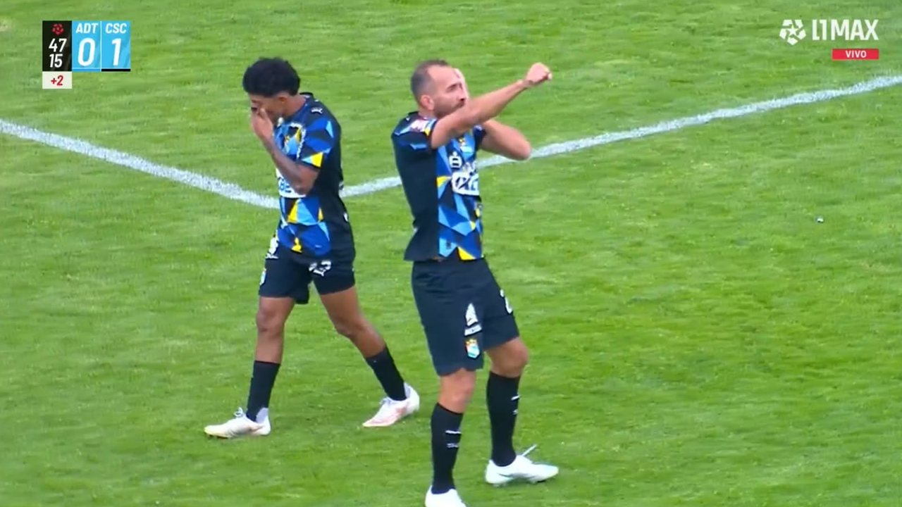
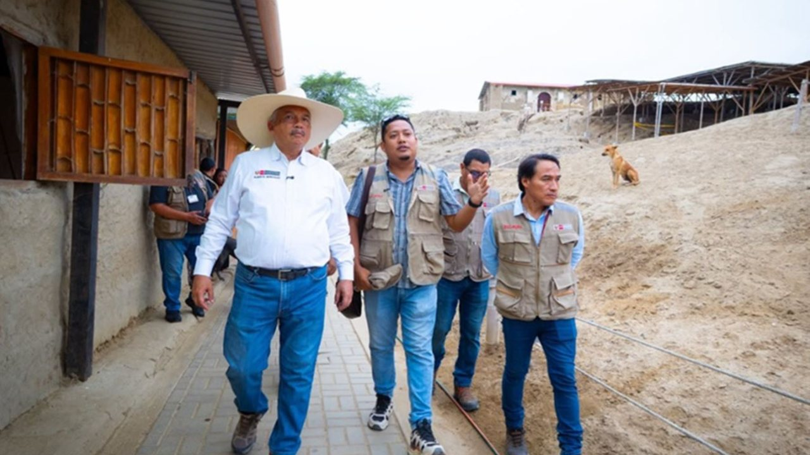

Para Luis Alberto Cuya, docente de la carrera de Administración de Negocios Internaciones de la Escuela de Educación Superior Cibertec, exportar puede abrir nuevas oportunidades de crecimiento para los negocios, pero ingresar a un mercado internacional requiere más que encontrar a un comprador.




Para Luis Alberto Cuya, docente de la carrera de Administración de Negocios Internaciones de la Escuela de Educación Superior Cibertec, exportar puede abrir nuevas oportunidades de crecimiento para los negocios, pero ingresar a un mercado internacional requiere más que encontrar a un comprador.
TV Azteca 7 transmitirá GRATIS el partido entre Tigres vs. Sigue la transmisión del duelo GRATIS por señal abierta de TV Azteca 7.
Mario Benedetti nos invita a reflexionar sobre valorar cada compañía. En conclusión, Mario Benedetti nos invita a reflexionar que la tristeza que provoca un momento vivido no siempre debe catalogarse como un fracaso; puede representar el “costo” de haber sido felices.
Un fotomontaje reúne a las figuras políticas peruanas Francis Allison, Jeanette Alonzo y Rafael López Aliaga durante distintas declaraciones públicas.
Las actividades permitieron orientar a los estudiantes sobre cómo reconocer situaciones de peligro, protegerse frente a posibles engaños, identificar riesgos en los entornos digitales y acudir oportunamente a sus familias, docentes o autoridades para solicitar ayuda.
Durante una entrevista concedida a un medio local, el titular del MEF fue enfático al señalar que el país no se encuentra en recesión y que el objetivo del Ejecutivo para el 2027 es blindar la economía nacional. "Perú está creciendo a un buen ritmo y está dando empleo a la gente.
FOTOS: MINDEF Juntos por el Perú ha decidido quitarse la máscara. La bancada presentó un proyecto para ampliar el Registro Integral de Formalización Minera (Reinfo) hasta el 31 de diciembre del 2028.
Agentes de la Dirección de Investigación de Trata de Personas y Tráfico Ilícito de Migrantes desbarataron la banda ‘Los Falsos Diablos’, sindicada de explotación sexual, en un operativo realizado en el distrito de Carabayllo, al norte de la capital.
Los precios de la división Transporte aumentaron 15,75 por ciento en Lima Metropolitana en los últimos doce meses a octubre, según el INEI. Los precios del rubro Transporte en Lima Metropolitana aumentaron 15,75 por ciento en octubre de 2026 frente al mismo mes de 2025, según el Instituto Nacional de Estadística e Informática (INEI).
Cada edición dura menos de dos minutos. En la web tienes el resumen de cada historia y el enlace directo al medio original para leerla completa.
Conoce Olfatecho →